← 返回阅读库 · 原论文目录
论文讲解阅读文档 · 论文精读 · v244
大模型告别逐字生成！并行推理提速200%！英伟达震撼发布：Multiverse
视频时长 00:24:59；讲解文字 8,350 字符；提取讲解画面 126 张。按视频原顺序阅读，每段文字保留时间戳。
文字来自整段视频的自动语音转写，按自然停顿分段，并与 PPT / 论文页面 / 演示画面对齐。未将讲解压缩为摘要；术语、数字和口述公式请结合画面及原论文核对。 阅读稿已校正规范部分明确术语误识别；原始逐字稿和每处修改记录另行保留。
讲解画面为源视频截图（640×360），不是可编辑 PPT 文件。全片按每秒 2 帧扫描内容变化，逐步展开页保留；连续动画保留代表画面。清晰度受源视频限制。
下载完整资料包 · 含离线 HTML、PDF、Word、全部 PPT 画面和字幕。
原论文与材料
Multiverse: Your Language Models Secretly Decide How to Parallelize and Merge Generation · 下载完整 PDF（26 页）
按时间阅读
00:00:00–00:00:04 · 画面 001
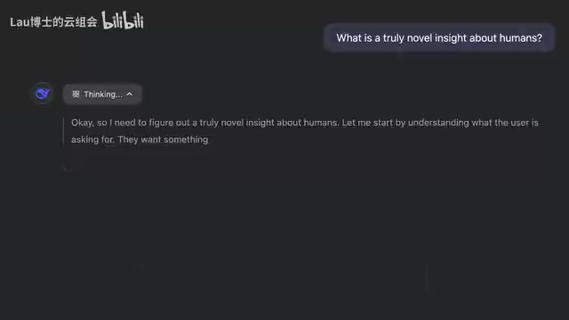
00:00:00–00:00:04 · 画面 001当 Dixit 还在生成漫长的推理过程，当本地部署的千万大模型还在一个个字挤牙膏的时候，CMU 的陈天琦团队直接掀了自回归的牌桌。
00:00:04–00:00:05 · 画面 002
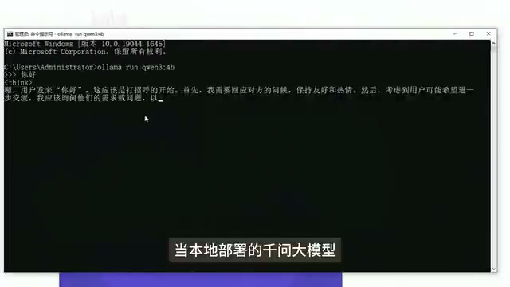
00:00:04–00:00:05 · 画面 00200:00:05–00:00:09 · 画面 003
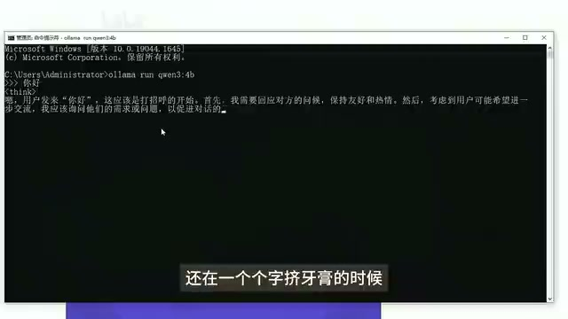
00:00:05–00:00:09 · 画面 00300:00:09–00:00:13 · 画面 004
00:00:09–00:00:13 · 画面 004其实你的 LM 早就能并行推理，只是缺了这套并行拆解的黑科技。因为达德 Motivus 框架震撼开源，两倍加速，38%效能暴增，直接把你的 GPU 利用率拉满。今天六博士将硬核拆解这篇改写 AI 生成规则的论文，看 Motivus 如何引爆并行生成的核弹。欢迎来到六博士的云组会。
00:00:13–00:00:16 · 画面 005
00:00:13–00:00:16 · 画面 00500:00:16–00:00:20 · 画面 006
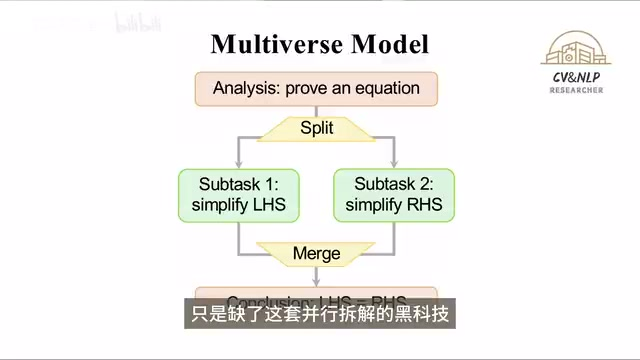
00:00:16–00:00:20 · 画面 00600:00:20–00:00:24 · 画面 007
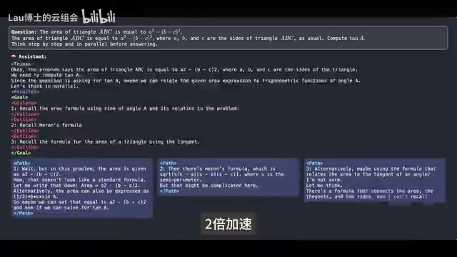
00:00:20–00:00:24 · 画面 00700:00:24–00:00:28 · 画面 008
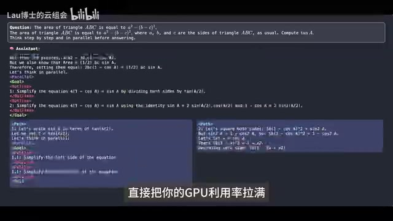
00:00:24–00:00:28 · 画面 00800:00:28–00:00:33 · 画面 009
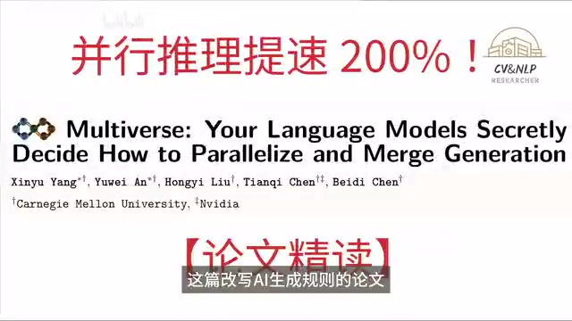
00:00:28–00:00:33 · 画面 00900:00:33–00:00:42 · 画面 010
00:00:33–00:00:42 · 画面 010我们每周都将至少有一篇高质量的论文精读发布出来。相信在一系列的论文学习以后，你就能成为人工智能领域的专家。上一期我们讲了图灵奖得主 Benjo 关于模型推理可解释性的相关内容。那本期我们就来看一下 CMU 和英伟达联合发布的最新研究 Motivus。你有没有想过为什么大语言模型在推理时总是那么慢？
00:00:42–00:00:43 · 画面 011
00:00:42–00:00:43 · 画面 01100:00:43–00:00:47 · 画面 012
00:00:43–00:00:47 · 画面 01200:00:47–00:00:51 · 画面 013
00:00:47–00:00:51 · 画面 01300:00:51–00:00:55 · 画面 014
00:00:51–00:00:55 · 画面 01400:00:55–00:00:58 · 画面 015
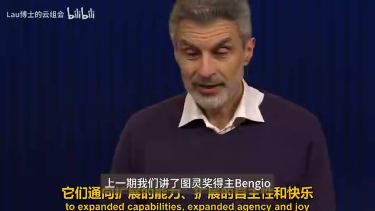
00:00:55–00:00:58 · 画面 01500:00:58–00:01:00 · 画面 016
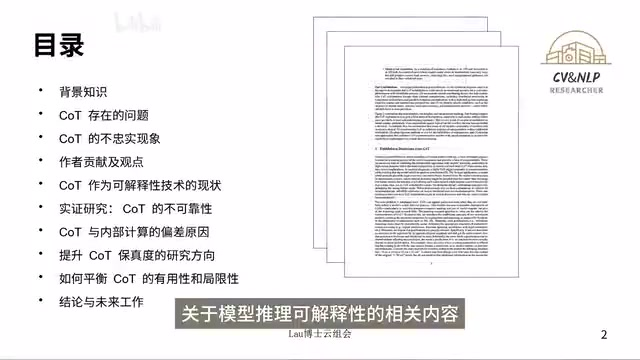
00:00:58–00:01:00 · 画面 01600:01:00–00:01:05 · 画面 017
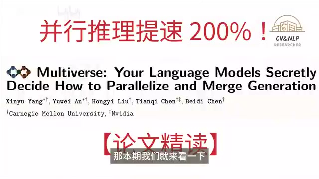
00:01:00–00:01:05 · 画面 01700:01:05–00:01:06 · 画面 018
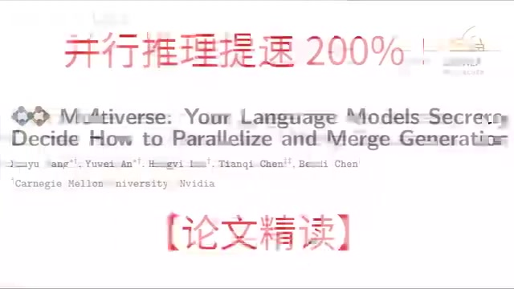
00:01:05–00:01:06 · 画面 01800:01:06–00:01:07 · 画面 019
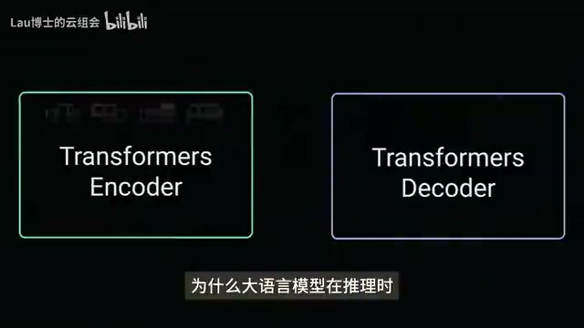
00:01:06–00:01:07 · 画面 01900:01:07–00:01:09 · 画面 020
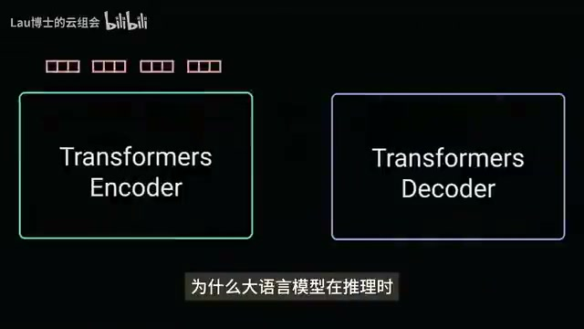
00:01:07–00:01:09 · 画面 02000:01:09–00:01:11 · 画面 021
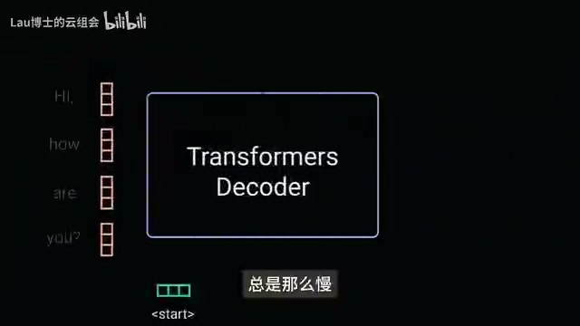
00:01:09–00:01:11 · 画面 021有没有办法让它们像人类一样分而治之的思考呢?这篇论文就提出了一个颠覆性的思路让模型自己决定如何并行生成内容这具体是怎么样的呢?那我们就一起来看看它是如何做得到的在正式开始之前我想给大家展示本篇论文的 demo 当我们理解了这个 demo 以后就能理解这篇论文的主要并行机制
00:01:11–00:01:15 · 画面 022
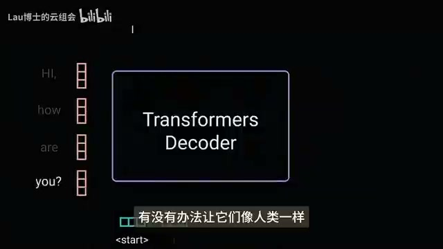
00:01:11–00:01:15 · 画面 02200:01:15–00:01:19 · 画面 023
00:01:15–00:01:19 · 画面 02300:01:19–00:01:23 · 画面 024
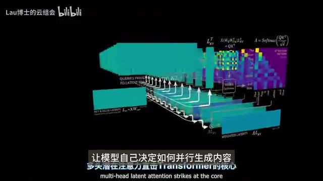
00:01:19–00:01:23 · 画面 02400:01:23–00:01:26 · 画面 025
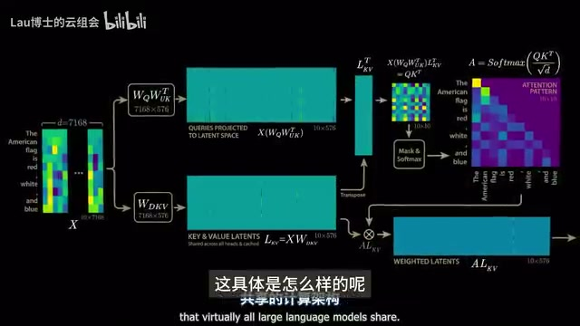
00:01:23–00:01:26 · 画面 02500:01:26–00:01:30 · 画面 026
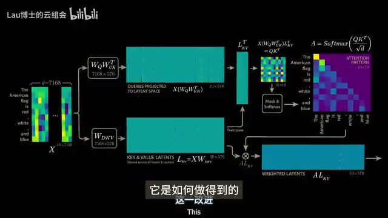
00:01:26–00:01:30 · 画面 02600:01:30–00:01:34 · 画面 027
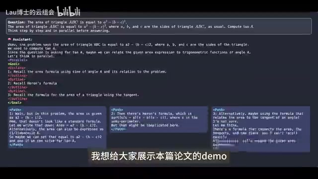
00:01:30–00:01:34 · 画面 02700:01:34–00:01:38 · 画面 028
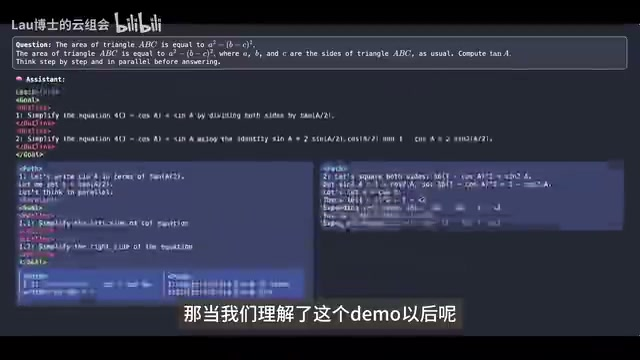
00:01:34–00:01:38 · 画面 028从 demo 可以看出，这是一个计算三角形 tension A 的问题。在这里作者要求模型用并行的方式给出解题的步骤并解答。这个时候模型对问题进行了并行的拆分解答，分别指向三种方法。第一个是使用 sin A 相关的三角形面积公式来计算，第二个是使用海伦公式。
00:01:38–00:01:41 · 画面 029
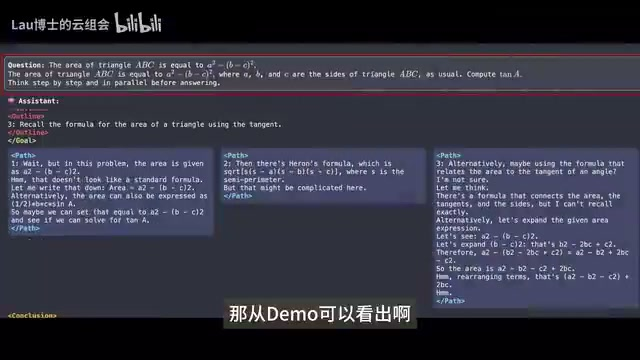
00:01:38–00:01:41 · 画面 02900:01:41–00:01:49 · 画面 030
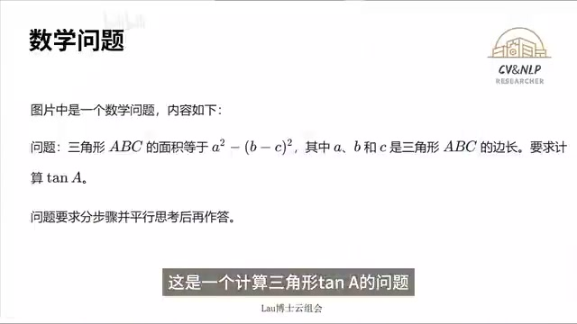
00:01:41–00:01:49 · 画面 03000:01:49–00:01:50 · 画面 031
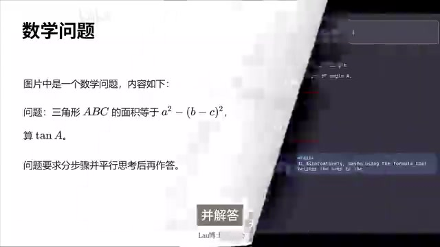
00:01:49–00:01:50 · 画面 03100:01:50–00:01:57 · 画面 032
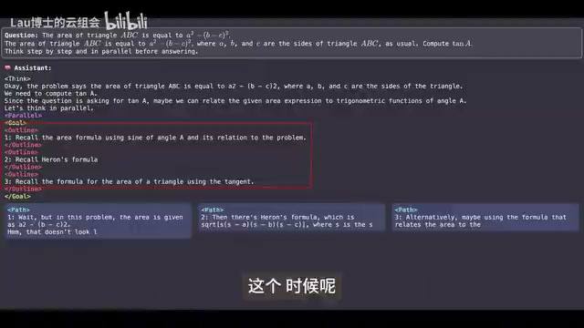
00:01:50–00:01:57 · 画面 03200:01:57–00:01:58 · 画面 033
00:01:57–00:01:58 · 画面 03300:01:58–00:02:02 · 画面 034
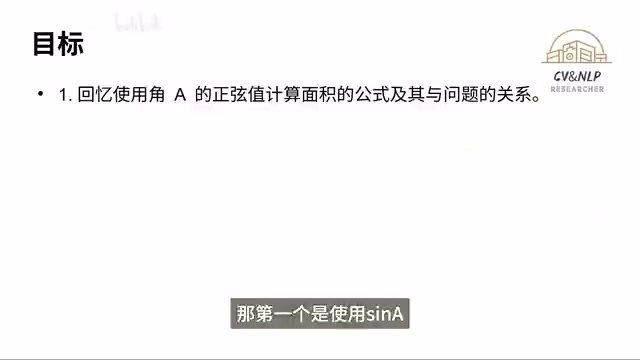
00:01:58–00:02:02 · 画面 03400:02:02–00:02:05 · 画面 035
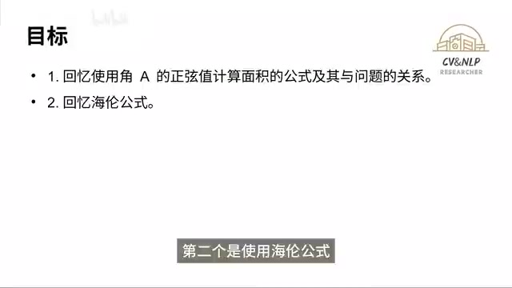
00:02:02–00:02:05 · 画面 035第三个是使用正切以及三角形面积相关的公式。这三种方法对应着三个 Path。并行推理得出的结果是方法一更有可能可以继续进行推理，而方法二比较复杂不太适用，方法三模型表示不能马上应用。与此同时模型把已知的条件进行了展开，认为可能和余旋定理有所关系。
00:02:05–00:02:08 · 画面 036
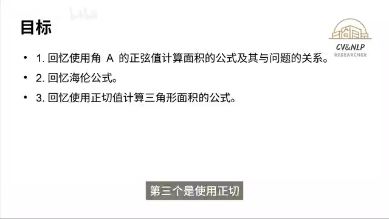
00:02:05–00:02:08 · 画面 03600:02:08–00:02:13 · 画面 037
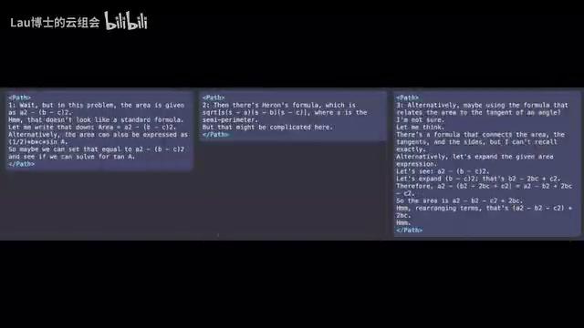
00:02:08–00:02:13 · 画面 03700:02:13–00:02:14 · 画面 038
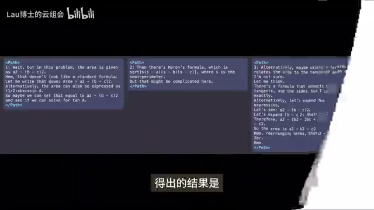
00:02:13–00:02:14 · 画面 03800:02:14–00:02:18 · 画面 039
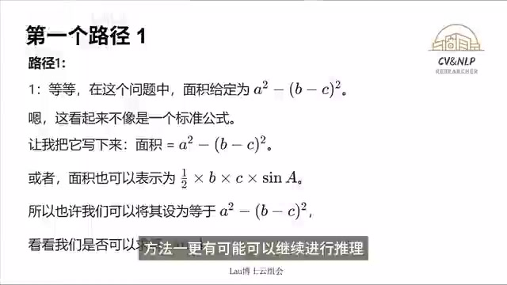
00:02:14–00:02:18 · 画面 03900:02:18–00:02:21 · 画面 040
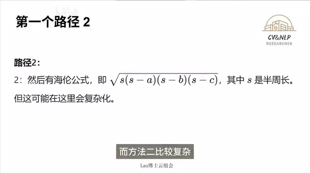
00:02:18–00:02:21 · 画面 04000:02:21–00:02:24 · 画面 041
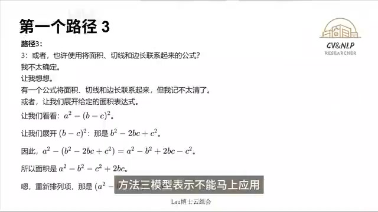
00:02:21–00:02:24 · 画面 04100:02:24–00:02:27 · 画面 042
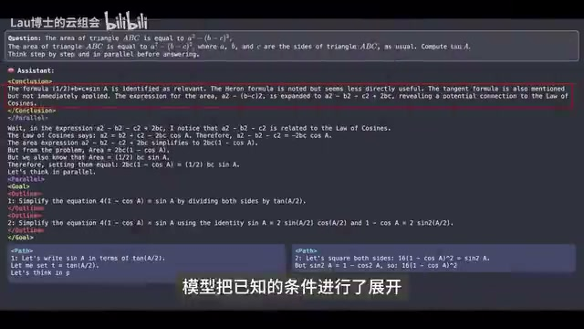
00:02:24–00:02:27 · 画面 04200:02:27–00:02:30 · 画面 043
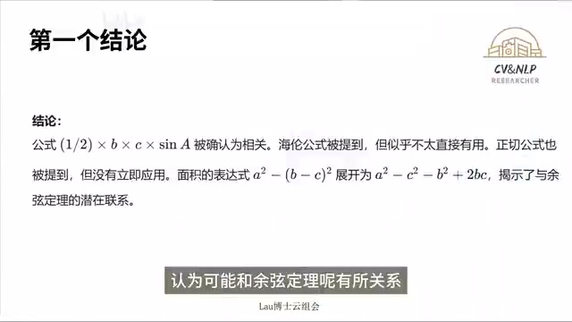
00:02:27–00:02:30 · 画面 043接着对刚才的表达式和余弦定理进行了进一步的推导得出了 2BC 乘上括号 1-cosA 等于 1⅔BCsinA 也就是 4 乘上括号 1-cosA 等于 sinA 接下来模型针对这一结果以两个路径并行拆分解答新的路径 1 又拆分成了路径 1.1 以及路径 1.2 进行解答路径 1.1 把 cosA 表达成了天准的形式
00:02:30–00:02:34 · 画面 044
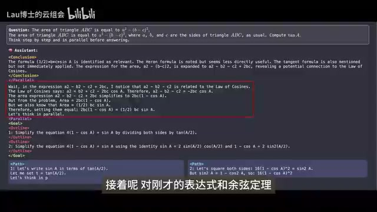
00:02:30–00:02:34 · 画面 04400:02:34–00:02:40 · 画面 045
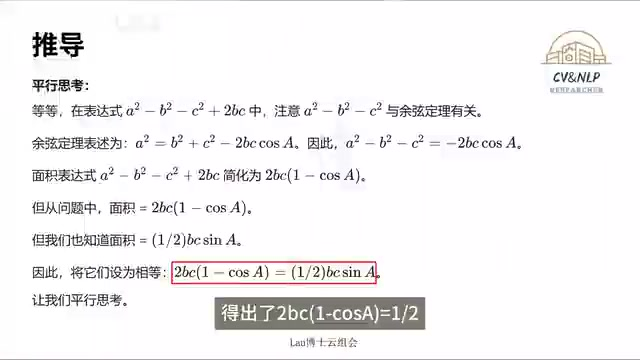
00:02:34–00:02:40 · 画面 04500:02:40–00:02:41 · 画面 046
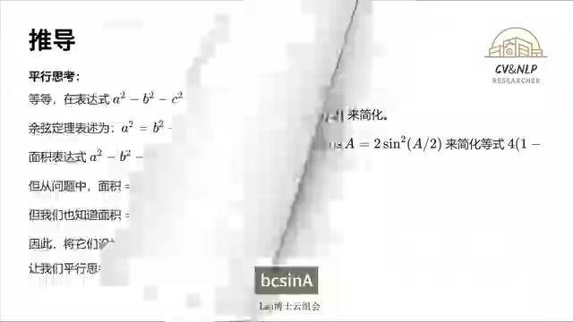
00:02:40–00:02:41 · 画面 04600:02:41–00:02:45 · 画面 047
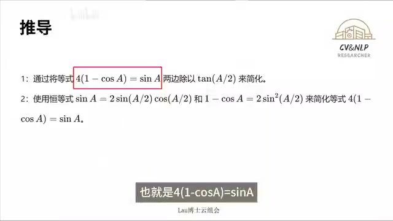
00:02:41–00:02:45 · 画面 04700:02:45–00:02:49 · 画面 048
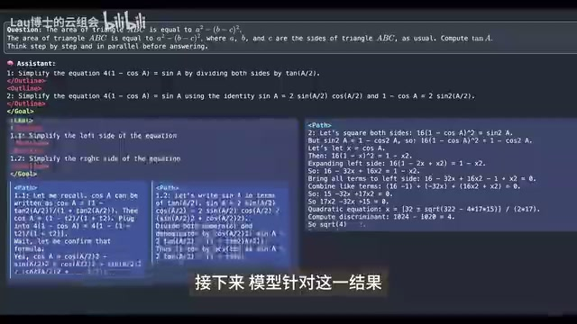
00:02:45–00:02:49 · 画面 04800:02:49–00:02:53 · 画面 049
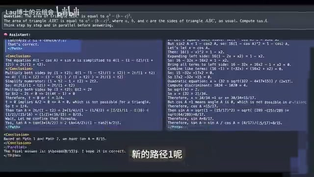
00:02:49–00:02:53 · 画面 04900:02:53–00:02:54 · 画面 050
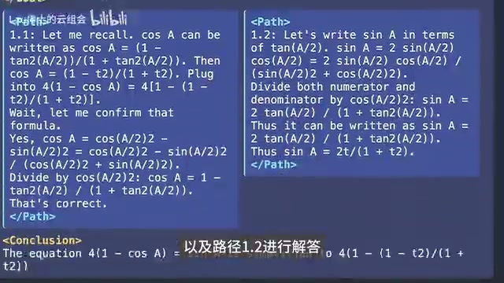
00:02:53–00:02:54 · 画面 05000:02:54–00:02:55 · 画面 051
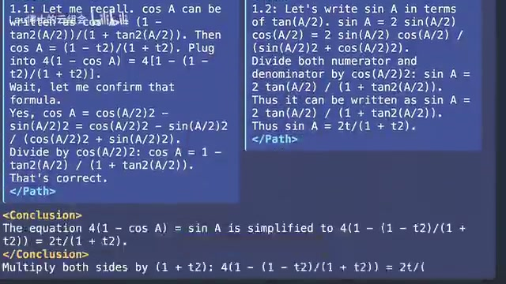
00:02:54–00:02:55 · 画面 05100:02:55–00:02:59 · 画面 052
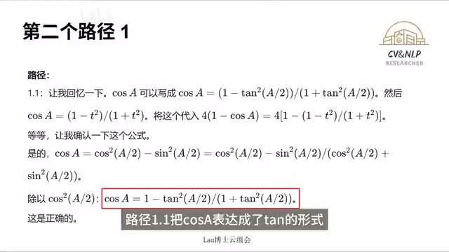
00:02:55–00:02:59 · 画面 052路径 1.2 把 sin 也表达成了 tangent 的形式分别带入了先前的结果经过化解得到 tangent 等于 15 分之 8 路径 2 是对先前的结果两边进行了平方最后进一步的化解也是得到 tangent 等于 15 分之 8 最后模型综合了两个路径的结果
00:02:59–00:03:02 · 画面 053
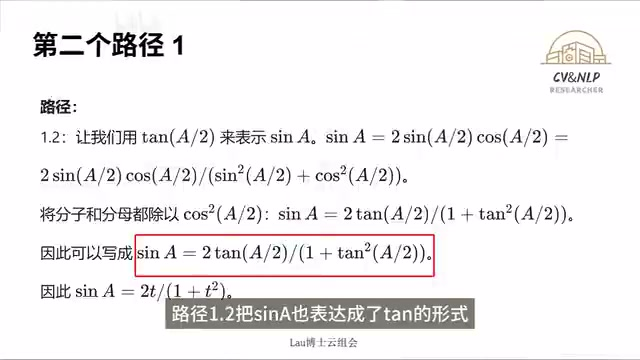
00:02:59–00:03:02 · 画面 05300:03:02–00:03:04 · 画面 054
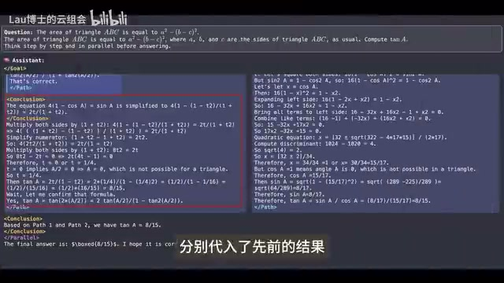
00:03:02–00:03:04 · 画面 05400:03:04–00:03:08 · 画面 055
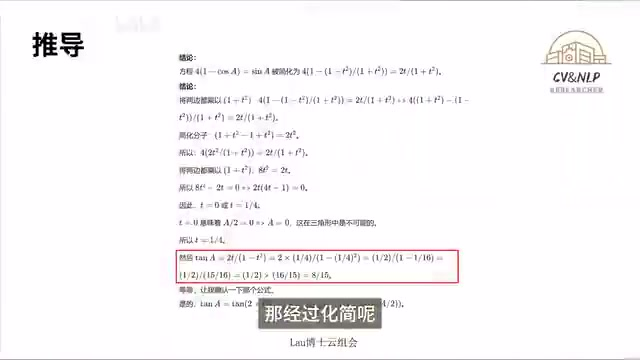
00:03:04–00:03:08 · 画面 05500:03:08–00:03:12 · 画面 056
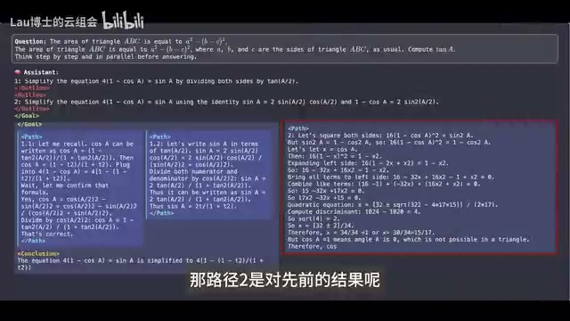
00:03:08–00:03:12 · 画面 05600:03:12–00:03:17 · 画面 057
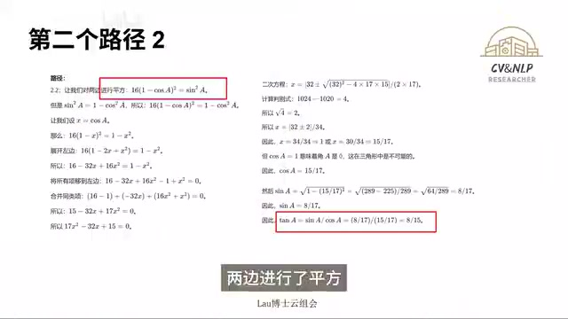
00:03:12–00:03:17 · 画面 05700:03:17–00:03:18 · 画面 058
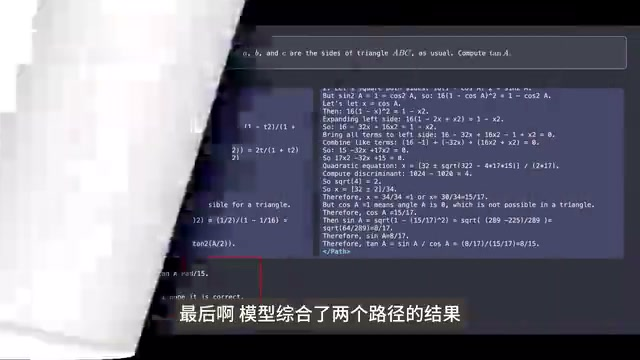
00:03:17–00:03:18 · 画面 05800:03:18–00:03:23 · 画面 059
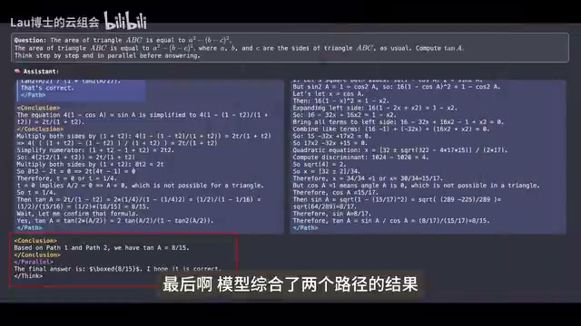
00:03:18–00:03:23 · 画面 059得出的结果也是十五分之八。其实从这个 demo 的推理过程可以看到，它并行推理的逻辑是把问题拆分成是三个或者是两个的解答路径，最后把推理的结果进行了整合。那这就是 Multibus 并行的核心内容。
00:03:23–00:03:27 · 画面 060
00:03:23–00:03:27 · 画面 06000:03:27–00:03:31 · 画面 061
00:03:27–00:03:31 · 画面 06100:03:31–00:03:35 · 画面 062
00:03:31–00:03:35 · 画面 06200:03:35–00:03:37 · 画面 063
00:03:35–00:03:37 · 画面 06300:03:37–00:03:39 · 画面 064
00:03:37–00:03:39 · 画面 064说到这里，再给不熟悉我们的同学介绍一下，本频道六博士云组会的自律，打造一站式人工智能交流平台，用尽可能好理解的语言让每位同学都能了解 AI 最前沿的内容。除了视频以外，也欢迎大家加入云组会的知识星球，我们做了三件事：第一，系统性的拆解了热门领域的学习路线，帮你的避开无效的努力，第二
00:03:39–00:03:47 · 画面 065
00:03:39–00:03:47 · 画面 06500:03:47–00:03:55 · 画面 066
00:03:47–00:03:55 · 画面 06600:03:55–00:03:56 · 画面 067
00:03:55–00:03:56 · 画面 06700:03:56–00:04:00 · 画面 068
00:03:56–00:04:00 · 画面 06800:04:00–00:04:02 · 画面 069
00:04:00–00:04:02 · 画面 069每日更新精选文献解读，省去 80%的检索时间。三建立专家学者交流群，不定期掉落福利，直接与专家学者互动交流，深度参与选题云组会。欢迎各位同学的加入。马上就要进入正文的讲解了。这篇论文一共十个章节，我们会从研究背景讲起，看作者是怎么发现自回归模型当中的隐藏并行结构。接着我们会深入了解 Multiverse 模型的设计思路以及实验结果。
00:04:02–00:04:05 · 画面 070
00:04:02–00:04:05 · 画面 07000:04:05–00:04:09 · 画面 071
00:04:05–00:04:09 · 画面 07100:04:09–00:04:10 · 画面 072
00:04:09–00:04:10 · 画面 07200:04:10–00:04:11 · 画面 073
00:04:10–00:04:11 · 画面 07300:04:11–00:04:13 · 画面 074
00:04:11–00:04:13 · 画面 07400:04:13–00:04:15 · 画面 075
00:04:13–00:04:15 · 画面 07500:04:15–00:04:16 · 画面 076
00:04:15–00:04:16 · 画面 07600:04:16–00:04:17 · 画面 077
00:04:16–00:04:17 · 画面 07700:04:17–00:04:18 · 画面 078
00:04:17–00:04:18 · 画面 07800:04:18–00:04:21 · 画面 079
00:04:18–00:04:21 · 画面 07900:04:21–00:04:22 · 画面 080
00:04:21–00:04:22 · 画面 08000:04:22–00:04:23 · 画面 081
00:04:22–00:04:23 · 画面 08100:04:23–00:04:27 · 画面 082
00:04:23–00:04:27 · 画面 08200:04:27–00:04:28 · 画面 083
00:04:27–00:04:28 · 画面 08300:04:28–00:04:29 · 画面 084
00:04:28–00:04:29 · 画面 08400:04:29–00:04:33 · 画面 085
00:04:29–00:04:33 · 画面 085最后了解这个方法对未来 AI 发展的意义。你有没有想过为什么我们在解一道复杂的数学题的时候会下意识的把它拆成几个小问题再分别求解？这种分而治之的思维方式正是人类的推理的核心。
00:04:33–00:04:37 · 画面 086
00:04:33–00:04:37 · 画面 08600:04:37–00:04:40 · 画面 087
00:04:37–00:04:40 · 画面 08700:04:40–00:04:41 · 画面 088
00:04:40–00:04:41 · 画面 08800:04:41–00:04:42 · 画面 089
00:04:41–00:04:42 · 画面 08900:04:42–00:04:43 · 画面 090
00:04:42–00:04:43 · 画面 09000:04:43–00:04:44 · 画面 091
00:04:43–00:04:44 · 画面 09100:04:44–00:04:48 · 画面 092
00:04:44–00:04:48 · 画面 092然而当前主流的大语言模型，比如说像 GPT 系列，却采用了自回归的生成方式，也就是一个词接一个词的顺序生成。这种方式虽然逻辑严谨，但效率低下，尤其是在处理复杂的推理任务的时候，生成的过程永长而且难以并行化。另一方面，虽然扩散模型支持
00:04:48–00:04:53 · 画面 093
00:04:48–00:04:53 · 画面 09300:04:53–00:04:54 · 画面 094
00:04:53–00:04:54 · 画面 09400:04:54–00:04:57 · 画面 095
00:04:54–00:04:57 · 画面 09500:04:57–00:05:00 · 画面 096
00:04:57–00:05:00 · 画面 09600:05:00–00:05:04 · 画面 097
00:05:00–00:05:04 · 画面 09700:05:04–00:05:07 · 画面 098
00:05:04–00:05:07 · 画面 09800:05:07–00:05:08 · 画面 099
00:05:07–00:05:08 · 画面 09900:05:08–00:05:10 · 画面 100
00:05:08–00:05:10 · 画面 100并行生成，但他们往往忽略了逻辑依赖关系，导致生成的内容缺乏连贯性，且计算资源浪费严重。更重要的是这些方法都没有办法像人类一样根据任务的结构灵活的决定何时并行，如何合并。正是基于这一观察，作者提出了一个颠覆性的思路，将经典的 MapReduce 并行计算方式内嵌到语言模型的生成过程当中，构建了一个能够自适应并行化的生成模型。
00:05:10–00:05:12 · 画面 101
00:05:10–00:05:12 · 画面 10100:05:12–00:05:16 · 画面 102
00:05:12–00:05:16 · 画面 10200:05:16–00:05:24 · 画面 103
00:05:16–00:05:24 · 画面 10300:05:24–00:05:25 · 画面 104
00:05:24–00:05:25 · 画面 10400:05:25–00:05:55 · 画面 105
00:05:25–00:05:55 · 画面 105MultiverseMultiverse 模型在生成的过程当中能够自动识别可并行的逻辑结构，将任务分解为多个子任务并行处理，并无损的合并结果。这种设计不仅大幅的提升了生成的效率，还保留了推理的逻辑完整性和可解释性。
00:05:55–00:05:56 · 画面 106
00:05:55–00:05:56 · 画面 106Figure 1 清晰的展示了 Multiverse 与自会规模型扩散模型的区别。自会规模型只能顺序的生成，扩散模型虽然能够并行，但是缺乏逻辑控制。而 Multiverse 则是能够实现自适应无损可拓展的并行生成。这个创新为构建更加高效的推理模型提供了全新的技术路径，也为未来的实现更智能更接近人类的思维方式的 AI 奠定了基础。
00:05:56–00:06:23 · 画面 107
00:05:56–00:06:23 · 画面 10700:06:23–00:08:23 · 画面 108
00:06:23–00:08:23 · 画面 108在论文的第二章相关工作当中，作者系统的回归了当前大圆模型在推理能力提升方面的三种主要的技术路径，并逐一的分析了它们的局限性。第一种是测试时的扩展，就是通过增加模型在推理阶段的生成的长度或是深度来提升性能。比如说 OpenAI 的 o1 模型和 DeepSync RE 都用了这种方法。通过生成更长的推理链来提高准确率。但是这种方法的核心问题就是由于自回归模型顺序生成的特性，生成的长度增加会导致延迟的线性增加，难以在实际的应用当中拓展。第二种的路径是非自回归模型，比如像扩散模型和一致性模型，它们通过并行的生成多个 token 来提升的效率。
然而,这些方法往往忽略了 token 之间的逻辑依赖关系导致生成的内容缺乏连贯性另外,扩散模型通常需要多次的迭代去噪计算的开销巨大且难以处理复杂的推理任务第三种是借助外部工具或模型来实现并行比如像蒙多卡罗素搜索或者是思维树这些方法虽然能够实现一定程度上的并行搜索，但由于依赖外部的模块进行任务分解和结果验证，那就会导致中间的推理状态在模块间传递的时候丢失，严重影响推理的完整性和效率。相比之下，Motivus 的创新之处就在于它是首次将 MapReduce 的结构内嵌于生成模型的内部。
不需要依赖外部的工具，也不会丢失中间的状态，实现了真正的内生并行。这种方法不仅提升了生成的效率，还保留了推理的逻辑的完整性和可解释性，为并行的生成提供了一个全新的解决方案。你有没有发现，有时候模型生成的推理过程看起来很乱，但其实里面藏着很多可以同时做的步骤。
00:08:23–00:08:28 · 画面 109
00:08:23–00:08:28 · 画面 10900:08:28–00:08:29 · 画面 110
00:08:28–00:08:29 · 画面 11000:08:29–00:09:52 · 画面 111
00:08:29–00:09:52 · 画面 111作者分析了上千条推理列，发现 98%都包含可以并行处理的部分，比如同时分析多个案例，尝试多个解法。但问题是，模型自己并不知道这些步骤可以并行。通过实验，作者发现即使我们告诉模型你可以并行，它也做不到。这就引出一个问题，我们能不能设计一个模型，让它有意识的并行思考。在论文的第三章中，作者提出了一个关键问题：自回归语言模型在生成过程中是否存在可以被并行处理的逻辑结构？为了回答这个问题，作者对 S1K-1 以数据集中的常恋推理轨迹进行了深入分析，结果令人惊讶。
超过 98%的推理链中都存在可以并行处理的逻辑结构。作者将这些并行结构分为两类：集体型和选择型。集体型结构指的是多个子任务可以并行执行，最终合并结果，例如同时分析多个案例或计算多个子表达式。选择型结构则是指模型在多个候选路径中选择一个继续推进，例如尝试不同的解题方法或假设。
00:09:52–00:11:10 · 画面 112
00:09:52–00:11:10 · 画面 112Video2 清晰地展示了这两种结构的典型示例。例如在解决一个数学问题时，模型可能会同时尝试两种不同的解法选择型，或者在计算一个复杂表达式时分别计算多个子表达式集体型。这些结构在推理链中频繁出现，说明自回归模型在生成过程中确实存在大量的并行潜力。然而，尽管这些并行结构广泛存在，自回归模型却无法主动识别或控制它们。作者通过 Prompting 和 Probing 实验验证了这一点。在 Prompting 实验中，即使明确提示模型可以并行思考，模型仍然无法生成并行结构。
在 Probing 实验中，作者训练了一个分类器来识别并行结构的起始位置，但分类器的准确率接近随机猜测，说明模型在隐藏状态中也缺乏对并行结构的显式表示。这一发现具有重要的启示，虽然自回归模型在训练过程中学习到了并行结构的生成模式，但它们并不具备显式的并行意识，这就引出了一个关键问题我们能否设计一种新的模型架构，让模型能够主动识别、控制并利用这些并行结构？这正是 Multiverse 模型设计的出发点。这就是 Multiverse 的核心设计了，它把生成过程分成了三个阶段：MapProcess 和 Reduce。你可以把它想象成一个任务流水线，先分解任务，再并行处理，最后合并结果。
00:11:10–00:12:54 · 画面 113
00:11:10–00:12:54 · 画面 113更厉害的是，这个过程可以嵌套，也就是说每个子任务还可以继续分解。这种设计不仅保留了因果性，还让模型真正实现了并行推理。在论文的第四章中，作者正式提出了 Motiverse 模型的核心设计思想，将经典的 MapReduce 并行计算范式内嵌到语言模型的生成过程中，构建一个能够自适应并行化的生成框架。Motiverse 模型的生成过程分为三个阶段：Map。
Process 和 Reduce。问题在 MAP 阶段，模型首先对输入任务进行分析和分解，生成一个简要的任务规划 Task Plan，并将任务划分为多个独立的子任务。例如在解决一个复杂的数学问题时，模型可能会将问题分解为多个子问题，每个子问题都可以独立求解。接下来进入 Plus 阶段，模型会并行的执行这些子任务。每个值任务都被分配到一个独立的生成路径 Path，这些路径在生成过程中互不干扰，完全并行的进行。
这种并行执行方式极大的提高了生成效率，尤其是在处理复杂推理任务时。问题最后在 Reduce 阶段，模型会将所有子任务的生成结果进行汇总和整合，生成一个完整的逻辑一致的最终答案。值得注意的是，Multiverse 模型支持递归嵌套，即每个子任务本身也可以进一步分解为更小的子任务，从而实现更细粒度的并行处理。Fierce 清晰地展示了 Modules 模型的三阶段结构，通过这种设计，Multiverse 模型不仅保留了自回归模型的因果性和逻辑一致性，还实现了真正的并行生成。这种自适应、无损、可扩展的并行生成方式，为构建更高效的推理模型提供了全新的技术路径。大问题来了，我们怎么样模型学会这种并行结构呢？作者设计的一个叫
00:12:54–00:13:16 · 画面 114
00:12:54–00:13:16 · 画面 11400:13:16–00:15:16 · 画面 115
00:13:16–00:15:16 · 画面 115Multivir Curator 的自动数据构建工具，它可以把自回归模型生成的顺序推理链自动转换成带有 MapReduce 结构的数据，整个过程由 AI 辅助完成，不需要人工标注。最终他们构建了一个包含 1000 条高质量样本的数据集，叫做 MultiVerb-1K。这个数据集是训练 Motivus 模型的关键。在论文的第五章第一节中，作者提出了一个关键问题：如何构建适合训练 Motiv of 模型的高质量并行数据？由于现有的推理数据集大多是顺序生成的，缺乏显式的并行结构，作者设计了一个自动化的数据构建工具。
Notiverse CuratorModiWolf Curator 是一个基于大语言模型 Gemini 2 5 Pro 的自动化数据构建流程，能够将顺序生成的推理链转化为带有 MapReduce 结构的并行数据问题。整个流程分为五个阶段：生成摘要素，首先将原始推理链分解为多个主要步骤，并进一步细化为子步骤，形成一个树状结构。其实别并行组分析步骤之间的依赖关系。
识别可以并行执行的步骤组问题。重构并行结构，将识别出的并行步骤组用 Pyro 标签包裹，形成并行块填充原始内容。将原始推理链中的详细内容填充到并行结构中，确保逻辑完整性。添加 MapReduce 结构，为每个并行块添加 Map 和 Reduce 阶段，并重写路径，确保每个路径独立且完整。通过这一流程，作者构建了 Motiveverse-1K 数据集，包含 1000 条高质量的并行推理样本，涵盖数学、逻辑推理等多个领域。实验表明，使用这一数据集训练的 Motiveverse模型在推理任务上表现优异，验证了数据构建方法的有效性。为了实现并行生成，作者还设计了新的注意力机制，叫做 Multiverse Attention。它的核心思想是养不同的推理路径或不干扰各自独立计算，这样既保留了 Transformer 的结构，又实现了并行推理。更重要的是，这种设计只需要少量数据就能微调，非常适合快速迁移。
00:15:16–00:16:39 · 画面 116
00:15:16–00:16:39 · 画面 116传统的 Transformance 使用因果注意力 Causal Attention，即每个 Token 只能关注它之前的位置，确保生成的因果性。问题这种设计虽然逻辑严谨，但限制了并行能力。而 Multiverse Attention 的关键创新在于在并行路径内部保留因果性，但路径之间互不干扰。具体做法是修改注意力掩码，使得同一并行路径内的 Token 保持因果注意力，不同路径之间的注意力被完全屏蔽，确保路径独立。在 Reduce 阶段，所有路径的输出被合并进入下一阶段的生成。此外，作者还调整了位置编码策略，使得不同路径可以从相同的位置索引开始，避免位置冲突。
这种设计使得 Multiverse Attention 既能支持并行生成，又能保持与原有 Transformer 架构的兼容性。实验表明，这种注意力机制不仅提升了生成效率，还能在少量数据如 Multiverse-1K 上快速微调，实现从传统 AR 模型到 Multiverse 模型的平滑迁移。有了模型和算法，还需要一个能跑起来的系统。作者基于 SGLang 开发了 Multiverse Engine。
00:16:39–00:18:39 · 画面 117
00:16:39–00:18:39 · 画面 117它可以根据模型生成的控制标签比如 Parallel 自动切换串型和并行模式。更重要的是，它支持 KV 缓存共享，避免重复计算，大大提升的效率。这个引擎让 Multiverse 真正具备了部署能力。在论文的第五章第三节中，作者提出了一个专门用于支持 Multiverse 模型并行生成的推理引擎 Multiverse Engine。这个引擎是基于 SGLang 框架扩展而来。
专门用于处理 MapReduce 结构的动态生成任务 Modiverse Engine 的核心功能是实现 MapProcessReduce 三个阶段的无缝切换和调度问题具体来说 Map 阶段当模型生成 Parallel 标签时引擎自动禁用 Map 阶段解析 Goal 和 RP 确定子任务数量并为每个子任务创建独立的生成路径 Process 阶段所有子任务路径被并行调度执行，每条路径共享前缀 KV 缓存，避免重复计算每条路径生成时使用独立的 KV 缓存互不干扰问题 Reduce 阶段当所有路径生成完成后引擎自动进入 Reduce 阶段将所有路径的 KV 缓存合并并生成 Conclude 标签继续后续生成为了提升效率 Motiverse Engine 实现了 KV 缓存共享机制问题在 MAP 阶段所有路径共享前缀 KV 缓存在 Reduce 阶段路径之间的 KV 缓存被高效合并
避免内存复制和冗余计算此外引擎还支持动态批处理 Continuous Batching 和灵活的路径调度确保在多路径并行时资源利用率最大化问题实验表明 Multiverse Engine 在不同 Batch Size 下都能稳定实现 1-2 倍的生成速度提升实验不分是最有说服力的问题作者在多个高难度推理任务上测试了 Multiverse-32B 结果非常亮眼不仅性能不输自回归模型甚至在某些任务上更好
00:18:39–00:18:40 · 画面 118
00:18:39–00:18:40 · 画面 11800:18:40–00:20:11 · 画面 119
00:18:40–00:20:11 · 画面 119而且在相同的生成时间内 Multiverse 能生成更多内容效率提升了近 2 倍这说明 Multiverse 不仅聪明还快问题在实验部分作者对 Multiverse-32B 进行了全面评估涵盖了多个高难度推理用户包括 AIME24、AIME25 MAS-500 和 GPQA Diamond 等在这些验物中 Motulus-32B 不仅表现出色甚至在某些验物上超越了传统的自回归模型例如在 AME-24 和 AAB-25 上MultiOffice-32B 分别取得了 53%8%和 45%8%的准确率显著优于同规模的自回归模型问题此外在相同的生成时间及相同的上下文长度下 MultiVoS 能够生成更多的 Token 平均性能提升 1%87%最高可达 2 倍的生成速度
这种效率提升在实际部署中具有重要意义尤其是在需要快速响应的场景中如实时问答辅助决策的更重要的是 Multiverse 的并行生成机制在保持高推理质量的同时显著降低了延迟展示了其在实际应用中的巨大潜力在论文的第七章效率分析中作者对 Multiverse 模型在实际部署中的生成效率进行了深入评估
00:20:11–00:22:01 · 画面 120
00:20:11–00:22:01 · 画面 120实验主要围绕两个维度展开并行度 Parallel 与生成延迟 Latency Per Token以及不同 Batch Size 下的加速效果首先作者分析了并行度与生成延迟之间的关系实验结果显示随着并行度的增加生成延迟显著降低具体来说当并行度从 1 问题 0 提升到 2 0 时生成延迟从 15 0 毫秒登都降低到 8问题 0 毫秒腾几乎实现了线性加速这表明 Multiverse 的并行生成机制能够充分利用硬件资源提升生成效率其次作者评估了 Multiverse在不同 Batch Size 下的加速效果
实验结果表明在 Batch Size 从 1 到 128 的范围内Multiverse 均能实现稳定的加速效果特别是在 Batch Size较大时加速效果更加明显最高实现了 2 倍的速度提升这说明 Multi-Ares 的并行生成机制在大规模部署中具有良好的扩展性此外作者还对生成长度对效率的影响进行了分析实验结果显示在 4K 输出长度下 Multiverse 的生成效率始终优于传统的 AR 模型这进一步证明了 Multiverse 在长文本生成任务中的优势综上所述 Multiverse 的并行生成机制不仅能够显著提升生成效率还具有良好的扩展性和稳定性这为大规模部署提供了有力支持总结一下 Multiverse 的最大贡献在于它让我们重新思考语言模型的生成方式
00:22:01–00:23:19 · 画面 121
00:22:01–00:23:19 · 画面 121不再是一个词一个词的顺序生成而是多个路径同时思考最后再合并结果这种方法不仅提升了效率也让我们离像人类一样思考的 AI 更近了一步未来作者也希望能把这个方法应用到更多任务中比如代码生成对话系统等Multiverse 的核心贡献在于它打破了传统语言模型顺序生成的限制提出了一种并行思考合并输出的新范式通过引入 MapReduce 解构模型能够在生成过程中动态地将任务分解为多个子任务并行处理再无损的合并结果这种方法不仅提升了生成效率也更贴近人类多线程思考的方式未来作者计划将 Multiverse
框架推广到更广泛的业务中，如代码生成、对话系统、多轮推理等问题。此外，当前模型沿基于监督微调，未来可结合强化学习进一步优化并行策略，提升模型的自适应能力和推理深度。同时，作者也希望通过优化引擎和硬件适配，进一步降低部署门槛，使更多研究者和开发者能够使用这一框架。
00:23:19–00:24:49 · 画面 122
00:23:19–00:24:49 · 画面 122当然任何方法都有局限，目前 Multi-Multi-Verb 主要应用于数学推理任务，尚未扩展到通用生成。此外信念方式还比较传统，未来可以引入强化学习来进一步优化并行策略。而且由于并行生成对 GPU 资源要求较高，部署成本也不低。但从长远来看，这种方法能显著提升能效，降低推理延迟，对 AI 系统的可持续发展具有重要意义。尽管 Motiver 展现了强大的性能和效率优势，但仍存在一些限制。首先，目前该方法主要应用于数学和科学推理任务，尚未在开放域生成、创意写作等更广泛的任务中验证其通用性。其次，模型的训练仍依赖高质量的结构化数据，数据构建成本较高。
其此外，并行生成对 GPU 资源的需求较大，尤其在长上下文和高并行度的情况下，部署成本不容忽视。不过从长远来看，Modifier 通过提升计算效率和减少生成延迟，有望显著降低 AI 系统的能耗，对推动绿色 AI 和可持续发展具有积极影响。随着硬件优化和算法改进Modevros 有潜力成为下一代语言模型的重要方向之一问题所以哪种大模型推理方式是你心目中最有潜力的 AI 呢?欢迎在评论区留言讨论以上是本期视频的全部内容欢迎关注六博士的云组会成为人工智能领域的
00:24:49–00:24:54 · 画面 123
00:24:49–00:24:54 · 画面 12300:24:54–00:24:55 · 画面 124
00:24:54–00:24:55 · 画面 12400:24:55–00:24:57 · 画面 125
00:24:55–00:24:57 · 画面 12500:24:57–00:24:59 · 画面 126
00:24:57–00:24:59 · 画面 126转写与来源说明 · 0 个自动复核提示
保留 88 个原始语音片段，0 个片段触发自动复核提示。提示仅用于定位可能的术语、重复或识别问题，不等于已确认错误。
讲解画面为源视频截图（640×360），不是可编辑 PPT 文件。全片按每秒 2 帧扫描内容变化，逐步展开页保留；连续动画保留代表画面。清晰度受源视频限制。
原视频：paper/合集_2026-10-16_论文精读/大模型告别逐字生成！并行推理提速200%！英伟达震撼发布：Multiverse【论文精读】.mp4
SHA-256：56d5bd28250b5b2fde9ea6ac497aab21312ce57eab2267d5a9e4f49783a3b146
全文按视频语音与画面制作。原论文可从上方链接下载；完整资料包保留全文、原始逐字稿、字幕和校对记录。